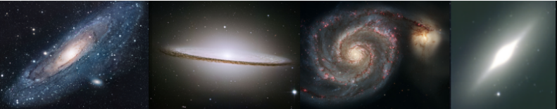

Evelyn Johnston
Home
Research
Planetarium
Publications and Talks
Contact Me
MUSE DR

MUSE Data Reduction Workshop
PUC, 7th August 2019
Slides for the MUSE talk
Exercises for the MUSE workshop
Video of the SNe remnant
Video of the spiral galaxy
Datacube of the Spiral galaxy
Datacube of Jupiter
^M ^M
^M